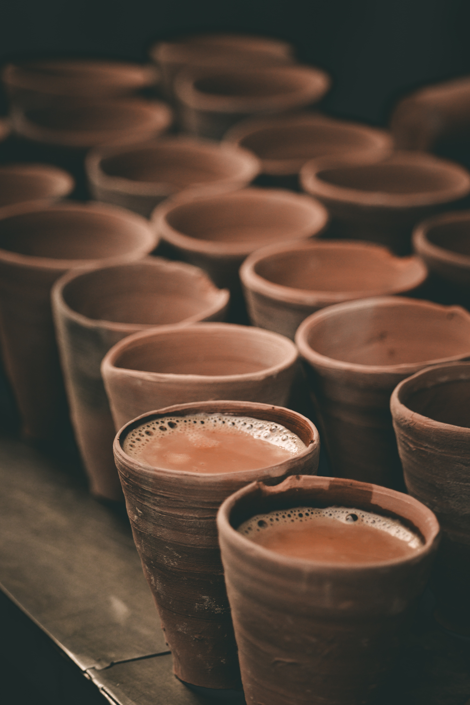

Chai Tea

A warm cup of chai tea nourishes the soul
This is a quick and simple treat to enjoy alone or with loved ones.
Ingredients
- 1 Cup of Milk
- 1 Tablesppon of Water
- Black Tea Bag
- 1 Tablespoon Sugar
- Chai Masala Seasoning
Directions
-
Bring water, milk and chai spices to a simmer in a small saucepan on the
stove.
- Reduce heat and add in black tea.
- Wait for tea to steep.
-
Strain the warm spiced mixture into a mug; this will hold back the whole
spices and tea leaves.
- Stir sugar into your chai and sweeten to taste.
Jump to Top
Main Page